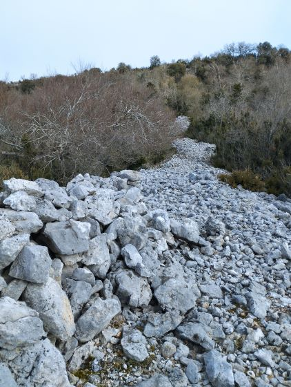
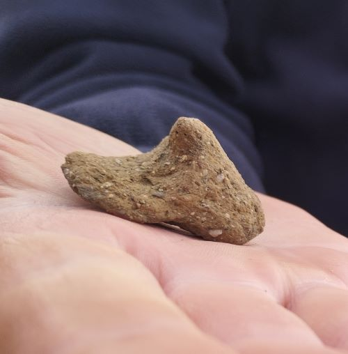

Information transmise par Jean Lautier.
Un abri sous roche, en limite de Quirbajou et Saint Martin Lys, témoigne d’une occupation à l’âge du bronze. La preuve est apportée par la découverte de deux jeunes spéléos de Quirbajou Étienne et Léo. Cette découverte est en accord avec la hache en bronze de Quirbajou. la poterie ci-dessous est estimée, par l’archéologue Jean Guilaine, à environ 1900 - 1430 avant notre ère...

Abri sous roche où a été trouvé cette preuve, la poterie encore en place


Poterie datée entre -1900 et -1430
Guidé par Manuel Gracia, avec Renaud Savy et Amédine Mas
Muraille proto-historique
Petit tesson de poterie trouvé sur la muraille

Etrange rocher - remarquer la petite croix en bas du rocher et les petits creux rond dont la position forme un cercle